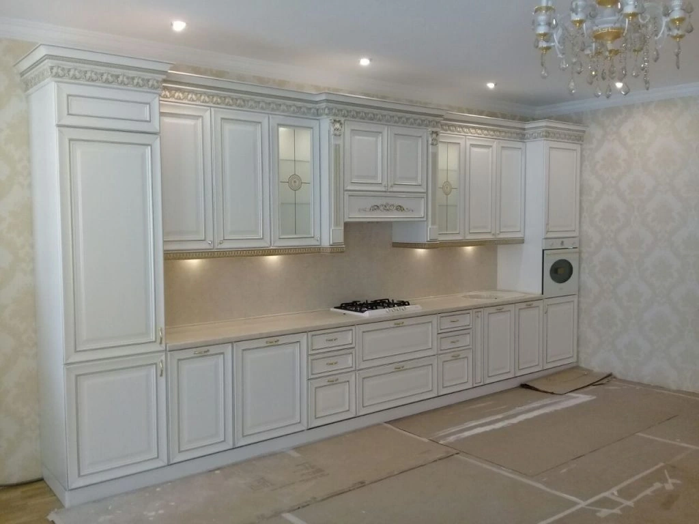

КУХНИ ПО ИНДИВИДУАЛЬНОМУ ПРОЕКТУКухня.
Кухня.
В вашем исполнении.
Кухни по индивидуальному проекту. Подберём фасады, наполнение и детали для вашего дома.
Обсудить мой проект
ФАСАДЫ И ДЕТАЛИКлассика.
Классика.
Ближе к деталям.
Профиль фасадов, остекление и сочетание отделок. Выберите близкое решение, а размеры и наполнение согласуем под ваше помещение.
Рассчитать мой проект